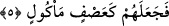

lâkin Arapların âdeti üzere “kâf” harfi “cîm”e dönüştürülmüştür.
Bir başka görüşe göre “siccîl” kâfirlerin azaplarının yazılı olduğu dîvânın, büyük
defterin özel ismidir. Tıpkı “siccîn”in, kâfirlerin amellerinin yazılı olduğu dîvânın ismi
olduğu gibi. Sanki şöyle denmiş oluyor: Yazılı ve dîvânda kayıtlı azaptan olan taşlar
atıyorlardı. Bu mânâya göre kelimenin kökü “iscâl”dir. Anlamı ise, atmak, göndermek
demektir.
5. Böylece Allah onları yenilip çiğnenmiş ekine çevirdi.
Sonunda Allah Teâlâ onları, üzerine yiyici böceklerin konduğu bir ekin yaprağına
çevirdi. Tırtıl yemiş bir yaprak gibi oldular. Ekin yaprağına “asf” diye isim verilmesi
şu sebepledir: Ekin kesilir ve rüzgâr onu sağa sola savurur. İşte burada yok olmaları,
köklerinin kazınıp külliyen gitmeleri yönüyle onlar ekin yaprağına benzetilmişlerdir. Ya
da onların vücutları, kuşların attığı taşlarla delik deşik olduğu için böceğin yediği ekin
yaprağına benzetilmişlerdir. Bu âyeti, “tanesi yenmiş ve kendisinden geriye hiçbirşey
kalmamış ekin yaprağı” olarak tefsir etmek de mümkündür. Bu takdirde ifâde, muzâf’ın
hazfedilmesi ve muzâfun ileyhin onun yerine geçmesi kabîlinden olur. “Tânesi yenmiş
ekin yaprağı” canlarının çıkması ve geriye cesedlerinin kalması îtibârıyla tânesi yenmiş
ekin yaprağına benzetilmişlerdir.
Onlar, hayvanların yediği ve dışkı olarak çıkardığı bir saman tanesi gibidir. Bir
müddet sonra bu dışkı kurumuş ve parçaları darmadağın olmuştur. Bu durumda onlar,
uzuvlarının paramparça olması îtibârıyla, tezeğin kuruyup etrafa saçılmasına
benzetilmişlerdir. Bu onların ne kadar kötü duruma düştüklerini güzel bir mübâlağa ile
vurgulamaktadır. Çünkü burada onlar, ekinin en değersizi yâni hiçbir şeye faydası
olmayan saman çöpüne benzetilmekle yetinilmemiş, daha da ötesi, hayvanların dışkısına
benzetilmişlerdir. Ancak burada “dışkı” kelimesi, “yenilmiş” kelimesi ile ifâde
edilmiştir. Veya ona, kinâye yapılarak ilk hâliyle işâret edilmiştir. O kelimenin burada
zikredilmesi hoş görülmediği için edebe riâyet edilerek kinâye yoluna gidilmiştir.
Nitekim şu âyette de yine yeme içmenin gerektirdiği “tuvalete gitme ihtiyâcı”ndan
kinâye olarak “yemek yemek”ten bahsedilmiştir: “Her ikisi de yemek yerlerdi.”
(Mâide, 5/75) Şu hâlde bu gibi yerlerde Kur’ân’ın metodu, açık ifâdeyi kullanmamaktır.
Âriflerden biri der ki: Kim Allah Teâlâ’dan başkasına güvenip dayanırsa; Allah Teâlâ
onu yaratıklarının en zayıfı ile helâk eder. Görülmez mi ki fil ashabı, Allah’ın en güçlü
yaratığı olması hasebi ile file güvendiği için Allah Teâlâ onları yaratıklarının en zayıfı
olan kuş ile helâk etti.
Denilmiştir ki; eğer fil olamıyorsan bari fil sûretindeki sivrisinekten eksik kalma.
Sivrisinek der ki; her ne kadar yük taşıyacak fil kuvvetine sâhip değilsem de bari fil